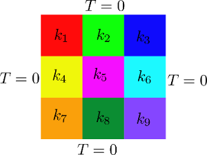
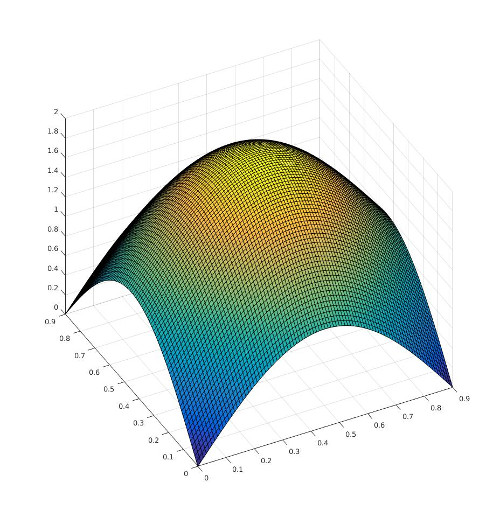

Introduction to the incremental POD tutorial
In this tutorial, we test an incremental POD algorithm. The incremental POD algorithm implemented in ITHACA-FV is the one proposed by Oxberry et al. in the paper "Limited-memory adaptive snapshot selection
for proper orthogonal decomposition"
To test the algorithm, we use a parameterized heat conduction problem. The problem equations are:
\[\nabla \cdot (k \nabla T) = S
\]
where \(k\) is the diffusivity, \(T\) is the temperature and \(S\) is the source term. The problem discretised and formalized in matrix equation reads:
\[AT = S
\]
where \(A\) is the matrix of interpolation coefficients, \(T\) is the vector of unknowns and \(S\) is the vector representing the source term. The domain is subdivided in 9 different parts and each part has parametrized diffusivity. See the image below for a clarification.

In this tutorial, we solve the heat conduction problem for several values of the parameter to generate the snapshots. Then, we created the POD space from these snapshot using both the classical POD and the incremental POD. Finally, to test the goodness of the incremental POD space, we genereate one more solution for a new value of the parameters and project it onto the POD space. Computing the relative error of the projection, we can test if the incremental POD space is able to approximate the solution space.
The ITHACAPODdict file
In this section are explained the main steps necessary to construct the tutorial N°2
The necessary header files
First of all let's have a look to the header files that needs to be included and what they are responsible for:
The standard C++ header for input/output stream objects:
The OpenFOAM header files:
#include "fvCFD.H"
#include "IOmanip.H"
#include "Time.H"
The header file of ITHACA-FV necessary for this tutorial
Header file of the ITHACAPOD class.
Header file of the ITHACAutilities namespace.
The Eigen library for matrix manipulation and linear and non-linear algebra operations:
And we define some mathematical constants and include the standard header for common math operations:
#define _USE_MATH_DEFINES
#include <cmath>
Implementation of the tutorial02 class
Then we can define the tutorialIPOD class as a child of the laplacianProblem class
Class to implement a full order laplacian parametrized problem.
Class where the tutorial number 20 is implemented.
{
public:
:
{}
tutorialIPOD(int argc, char *argv[])
volScalarField S(IOobject("S", runTime.timeName(), mesh, IOobject::NO_READ, IOobject::AUTO_WRITE), T.mesh(), dimensionedScalar("zero", dimensionSet(0, 0, -1, 1, 0, 0, 0), 0))
The members of the class are the fields that needs to be manipulated during the resolution of the problem
Inside the class it is defined the offline solve method according to the specific parametrized problem that needs to be solved.
void offlineSolve(word folder="./ITHACAoutput/Offline/")
It perform an offline Solve.
{
If the offline solve has already been performed than read the existing snapshots
bool offline
Boolean variable, it is 1 if the Offline phase has already been computed, else 0.
{
}
PtrList< volScalarField > Tfield
List of snapshots for the solution.
Eigen::MatrixXd mu_samples
Matrix of parameters to be used for PODI, where each row corresponds to a sample point....
List< Eigen::MatrixXd > readMatrix(word folder, word mat_name)
Read a three dimensional matrix from a txt file in Eigen format.
void read_fields(PtrList< GeometricField< Type, PatchField, GeoMesh > > &Lfield, word Name, fileName casename, int first_snap, int n_snap)
Function to read a list of fields from the name of the field and casename.
else perform the offline solve where a loop over all the parameters is performed:
for (label
i = 0;
i <
mu.rows();
i++)
Eigen::MatrixXd mu
Row matrix of parameters.
{
for (label j = 0; j <
mu.cols() ; j++)
{
}
List< scalar > theta
Theta (coefficients of the affine expansion)
a 0 internal constant value is assigned before each solve command with the lines
void assignIF(T &s, G &value)
Assign internal field condition.
and the solve operation is performed, see also the laplacianProblem class for the definition of the methods
void truthSolve()
Perform a TruthSolve.
The we need also to implement a method to set/define the source term that may be problem dependent. In this case the source term is defined with a hat function:
void SetSource()
Define the source term function.
{
volScalarField
yPos =
T.mesh().C().component(vector::Y).ref();
volScalarField
xPos =
T.mesh().C().component(vector::X).ref();
{
}
forAll(example_CG.gList, solutionI)
label counter
Counter used for the output of the full order solutions.
}
Define by:
\[ S = \sin(\frac{\pi}{L}\cdot x) + \sin(\frac{\pi}{L}\cdot y) \]
where \(L\) is the dimension of the thermal block which is equal to 0.9.

With the following is defined a method to set compute the parameter of the affine expansion:
void compute_nu()
Compute the diffusivity in each subdomain.
{
The list of parameters is resized according to number of parametrized regions
PtrList< volScalarField > nu_list
Nu (diffusivity)
The nine different volScalarFields to identify the viscosity in each domain are initialized:
and the 9 different boxes are defined:
Eigen::MatrixXd Box1(2, 3);
Box1 << 0, 0, 0, 0.3, 0.3, 0.1;
Eigen::MatrixXd Box2(2, 3);
Box2 << 0.3, 0, 0, 0.6, 0.3, 0.1;
Eigen::MatrixXd Box3(2, 3);
Box3 << 0.6, 0, 0, 0.91, 0.3, 0.1;
Eigen::MatrixXd Box4(2, 3);
Box4 << 0, 0.3, 0, 0.3, 0.6, 0.1;
Eigen::MatrixXd Box5(2, 3);
Box5 << 0.3, 0.3, 0, 0.6, 0.6, 0.1;
Eigen::MatrixXd Box6(2, 3);
Box6 << 0.6, 0.3, 0, 0.91, 0.6, 0.1;
Eigen::MatrixXd Box7(2, 3);
Box7 << 0, 0.6, 0, 0.3, 0.91, 0.1;
Eigen::MatrixXd Box8(2, 3);
Box8 << 0.3, 0.61, 0, 0.6, 0.91, 0.1;
Eigen::MatrixXd Box9(2, 3);
and for each of the defined boxes the relative diffusivity field is set to 1 inside the box and remain 0 elsewhere:
void setBoxToValue(GeometricField< Type, fvPatchField, volMesh > &field, Eigen::MatrixXd Box, Type value)
Set value of a volScalarField to a constant inside a given box.
See also the ITHACAutilities::setBoxToValue for more details.
The list of diffusivity fields is set with:
Definition of the main function
Once the tutorialIPOD class is defined the main function is defined, an example of type tutorialIPOD is constructed:
the number of parameter is set:
example.Pnumber = 9;
example.setParameters();
the range of the parameters is defined:
example.mu_range.col(0) = Eigen::MatrixXd::Ones(9, 1) * 0.001;
example.mu_range.col(1) = Eigen::MatrixXd::Ones(9, 1) * 0.1;
and 500 random combinations of the parameters are generated:
example.genRandPar(example.Tnumber);
the size of the list of values that are multiplying the affine forms is set:
the source term is defined, the compute_nu and assemble_operator functions are called
example.SetSource();
example.compute_nu();
example.assemble_operator();
then the Offline full order Solve is performed:
Once the Offline solve is performed the modes ar obtained using the ITHACAPOD::getModes function:
void getModes(PtrList< GeometricField< Type, PatchField, GeoMesh > > &snapshots, PtrList< GeometricField< Type, PatchField, GeoMesh > > &modes, word fieldName, bool podex, bool supex, bool sup, label nmodes, bool correctBC)
Computes the bases or reads them for a field.
Then, the incremental POD is initialized
incrementalPOD< scalar, fvPatchField, volMesh > scalarIncrementalPOD
and filled
Finally, we do some post processing
The plain program
Here there's the plain code
#include <iostream>
#include "fvCFD.H"
#include "IOmanip.H"
#include "Time.H"
#include <Eigen/Dense>
#define _USE_MATH_DEFINES
#include <cmath>
{
public:
:
{}
{
{
}
else
{
List<scalar> mu_now(9);
scalar IF = 0;
for (label
i = 0;
i <
mu.rows();
i++)
{
for (label j = 0; j <
mu.cols() ; j++)
{
}
}
}
}
{
volScalarField
yPos =
T.mesh().C().component(vector::Y).ref();
volScalarField
xPos =
T.mesh().C().component(vector::X).ref();
{
}
}
{
Eigen::MatrixXd Box1(2, 3);
Box1 << 0, 0, 0, 0.3, 0.3, 0.1;
Eigen::MatrixXd Box2(2, 3);
Box2 << 0.3, 0, 0, 0.6, 0.3, 0.1;
Eigen::MatrixXd Box3(2, 3);
Box3 << 0.6, 0, 0, 0.91, 0.3, 0.1;
Eigen::MatrixXd Box4(2, 3);
Box4 << 0, 0.3, 0, 0.3, 0.6, 0.1;
Eigen::MatrixXd Box5(2, 3);
Box5 << 0.3, 0.3, 0, 0.6, 0.6, 0.1;
Eigen::MatrixXd Box6(2, 3);
Box6 << 0.6, 0.3, 0, 0.91, 0.6, 0.1;
Eigen::MatrixXd Box7(2, 3);
Box7 << 0, 0.6, 0, 0.3, 0.91, 0.1;
Eigen::MatrixXd Box8(2, 3);
Box8 << 0.3, 0.61, 0, 0.6, 0.91, 0.1;
Eigen::MatrixXd Box9(2, 3);
Box9 << 0.6, 0.6, 0, 0.9, 0.91, 0.1;
}
{
{
}
}
{
word folder = "./ITHACAoutput/test/";
scalar IF = 0;
List<scalar> mu_now(9);
volScalarField&
T =
_T();
for (label j = 0; j <
mu.cols() ; j++)
{
mu_now[j] = _mu;
}
}
};
int main(
int argc,
char* argv[])
{
example._runTime());
int NmodesTout =
para->ITHACAdict->lookupOrDefault<
int>(
"NmodesTout", 15);
int NmodesTproj =
para->ITHACAdict->lookupOrDefault<
int>(
"NmodesTproj", 10);
double tolleranceSVD =
para->ITHACAdict->lookupOrDefault<
double>(
"tolleranceSVD", 1);
example.Pnumber = 9;
example.Tnumber = NmodesTout;
example.setParameters();
example.mu_range.col(0) = Eigen::MatrixXd::Ones(9, 1) * 0.001;
example.mu_range.col(1) = Eigen::MatrixXd::Ones(9, 1) * 0.1;
example.genRandPar(example.Tnumber);
example.theta.resize(9);
example.SetSource();
example.compute_nu();
example.assemble_operator();
example.offlineSolve();
example.podex, 0, 0,
NmodesTout);
for (int fieldI = 1; fieldI < example.Tfield.size(); fieldI++)
{
IPOD.addSnapshot(example.Tfield[fieldI]);
}
IPOD.writeModes();
word folder = "./ITHACAoutput/testReconstruction";
volScalarField Tfull(example.solveFull(0.05));
PtrList<volScalarField> TfullList;
TfullList.append(Tfull.clone());
PtrList<volScalarField> Tproj;
example.Tmodes.projectSnapshots(TfullList, Tproj, NmodesTproj);
double EPS = 1e-16;
volScalarField relativeErrorField(Tproj[0]);
for (label
i = 0;
i < relativeErrorField.internalField().size();
i++)
{
if (std::abs(Tfull.ref()[
i]) < EPS)
{
relativeErrorField.ref()[
i] = (std::abs(Tfull.ref()[
i] - Tproj[0].ref()[
i])) /
EPS;
}
else
{
relativeErrorField.ref()[
i] = (std::abs(Tfull.ref()[
i] - Tproj[0].ref()[
i])) /
}
}
"1", folder,
"relativeErrorField_POD");
relativeErrorField) << endl;
IPOD.projectSnapshots(TfullList, Tproj);
volScalarField Tipod = Tproj[0];
for (label
i = 0;
i < relativeErrorField.internalField().size();
i++)
{
if (std::abs(Tfull.ref()[
i]) < EPS)
{
relativeErrorField.ref()[
i] = (std::abs(Tfull.ref()[
i] - Tipod.ref()[
i])) / EPS;
}
else
{
relativeErrorField.ref()[
i] = (std::abs(Tfull.ref()[
i] - Tipod.ref()[
i])) /
}
}
"1", folder,
"relativeErrorField_IPOD");
Info << "\n\nRelative error L2 norm incrementalPOD = " <<
}
Header file of the reducedLaplacian class.
Class for the definition of some general parameters, the parameters must be defined from the file ITH...
static ITHACAparameters * getInstance()
Gets an instance of ITHACAparameters, to be used if the instance is already existing.
PtrList< fvScalarMatrix > operator_list
List of operators.
autoPtr< volScalarField > _T
Temperature field.
autoPtr< volScalarField > _nu
Diffusivity.
autoPtr< volScalarField > _S
Source Term.
volScalarField & S
Source term field.
volScalarField & nu
Diffusivity field.
volScalarField & T
[tutorialIPOD] Temperature field
volScalarField solveFull(double _mu)
Performs a full order solution for a uniform value of mu.
void assemble_operator()
Construct the operator_list where each term of the affine decomposition is stored.
Header file of the incrementalPOD class.
Header file of the laplacianProblem class.
void exportSolution(GeometricField< Type, PatchField, GeoMesh > &s, fileName subfolder, fileName folder, word fieldName)
Export a field to file in a certain folder and subfolder.
double L2Norm(GeometricField< scalar, fvPatchField, volMesh > &field)
 1.13.2
1.13.2